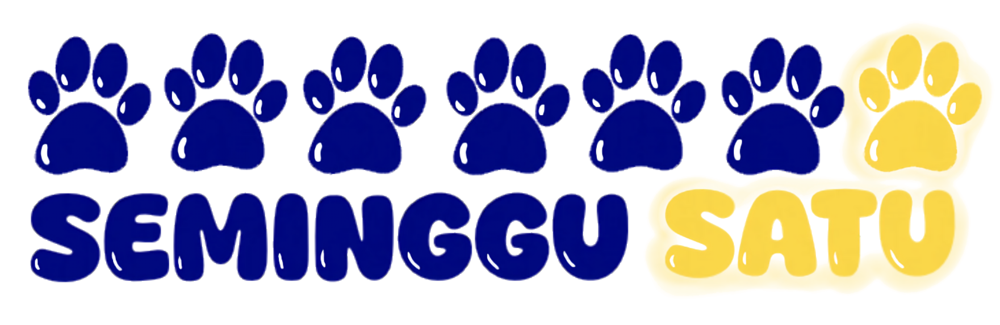

Seminggu Satu itu komunitas sekaligus penyelenggara workshop journaling kreatif di Jakarta. Dari cafe, coworking space, sampai toko buku & organisasi — ini portofolio kita + skema kolaborasi yang bisa langsung kita diskusiin.
Seminggu Satu adalah komunitas & penyelenggara event journaling kreatif. Kita percaya journaling bisa jadi momen buat connect — sama diri sendiri, sama orang terdekat, atau sama orang baru yang punya minat yang sama.
Dari sesi santai berdua pasangan/teman sampai journaling bareng orang tua & anak — tiap event didesain biar pesertanya nggak cuma pulang bawa karya, tapi juga cerita. Event rutin jalan dan udah beberapa kali kolaborasi bareng cafe & venue di Jakarta.
Semua workshop pakai konsep "journaling kit" — peserta nggak perlu bawa alat apa-apa, tinggal datang & berkarya.
Creative date, sesi journaling bareng. Tiap sesi ada tema & challenge visual yang beda-beda jadi nggak monoton.
Parent & Kid Journal Playdate — journaling bareng si kecil, abadikan momen berdua langsung di halaman jurnal.
Ubah shopping bag bekas (spunbond bag) favorit jadi cover jurnal yang estetik.
Versi private & intimate dari Upcycle Journal, maksimal 3 orang per sesi. Cocok buat yang mau santai bareng teman dekat.
Journal custom dari kertas spesial, pilih kombinasi warna favorit sendiri.
Bookmark interaktif dengan mekanisme pull & pop, pilih pita & rantai favorit sendiri.
Frame, Texture & Motion — cara baru buat journaling langsung di dalam frame.
Cuplikan dari beberapa sesi yang udah berjalan.
Ada 3 skema yang bisa dipilih sesuai jenis kolaborasinya — semua masih bisa didiskusikan lagi sesuai kebutuhan.
Event dilangsungkan di tempat kamu — durasi sesi 90–150 menit, plus 1 jam sebelum & sesudah buat load/unload barang.
Open for discussion — jumlah peserta & nominal masih bisa disesuaikan dengan venue.
Cocok buat kolaborasi non-venue — ikut acara yang udah ada, kolaborasi sama toko buku, atau organisasi/komunitas lain.
Cocok buat company gathering, komunitas besar, atau acara dengan jumlah peserta yang lebih fleksibel.
(2 × Rp1.250.000) + (20 × Rp20.000) = Rp2.500.000 + Rp400.000 = Rp2.900.000. Durasi & jumlah peserta menyesuaikan kebutuhan kamu.